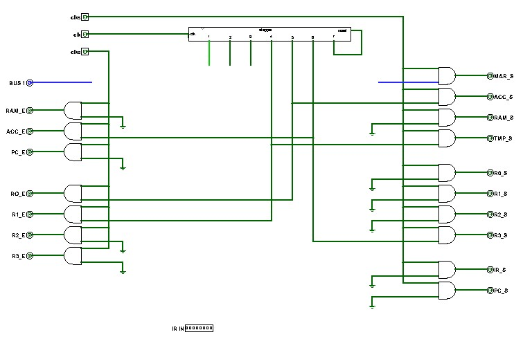
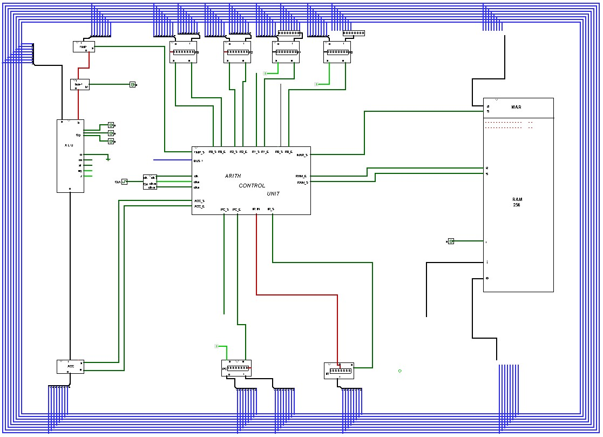

Control Circuit for the ADD Operation
The diagrams below illustrate the circuit required for the **"Add 2 numbers"** operation of the Control Unit and how it is temporarily wired into the CPU template to create an **"Arith-Only CPU"** for explanatory purposes. The video that follows demonstrates the operation.
Arith Control Unit Diagram
This diagram shows the logic within the Control Unit specifically for executing an addition operation.

For clarity, the essential stepper connections are listed below:
- **Stepper 4** connects to **R1\_E** (Register 1 Enable) and **TMP\_S** (Temporary Register Set)
- **Stepper 5** connects to **R0\_E** (Register 0 Enable) and **ACC\_S** (Accumulator Set)
- **Stepper 6** connects to **ACC\_E** (Accumulator Enable) and **R3\_S** (Register 3 Set)
- **Stepper 7** connects to **Stepper reset**
CPU Setup for Arith Control Unit
This circuit is a temporary setup used to test the arithmetic control logic:

The temporary modifications included in this test bed are:
- The inputs for **R0** and **R1** have been removed from the BUS and connected to **8-bit inputs** so that the values can be manually changed to test the addition operation.
- The **'set'** input for **R0** and **R1** are set to a constant value of **1**.
- The **RAM input** and **RAM output** have been removed from the BUS.
- The **MAR** (Memory Address Register) input has been removed from the BUS.